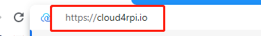
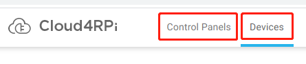
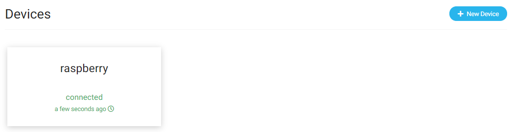
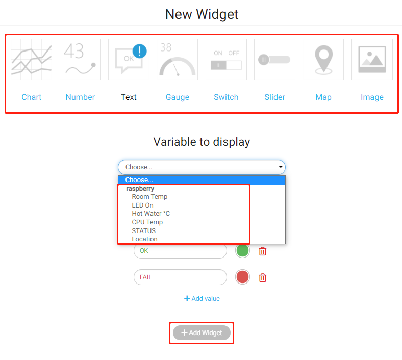

Note
Hello, welcome to the SunFounder Raspberry Pi & Arduino & ESP32 Enthusiasts Community on Facebook! Dive deeper into Raspberry Pi, Arduino, and ESP32 with fellow enthusiasts.
Why Join?
Expert Support: Solve post-sale issues and technical challenges with help from our community and team.
Learn & Share: Exchange tips and tutorials to enhance your skills.
Exclusive Previews: Get early access to new product announcements and sneak peeks.
Special Discounts: Enjoy exclusive discounts on our newest products.
Festive Promotions and Giveaways: Take part in giveaways and holiday promotions.
👉 Ready to explore and create with us? Click [here] and join today!
Quick Guide on Cloud4RPi
Install Cloud4RPi in Your Raspberry Pi
It is advisable to update your system before installing.
sudo apt update && sudo apt upgrade -y
Install/update the required packages.
sudo apt install git python3 python3-pip -y
Install Cloud4RPi with the following command:
sudo pip3 install cloud4rpi
Note
This tutorial provides the installation method for Python 3.0 and above. For lower versions of Python, the commands may need to be modified.
Login to Cloud4RPi on Your Computer
Open Chromium Web Browser and enter this link: https://cloud4rpi.io.
Before using it, you need to register and log in to your Cloud4RPi account.

Once logged in, you should see two buttons at the top of Cloud4RPi, Devices to display the device connections and Control Panels to display the information received or sent from the Raspberry Pi on the webpage.
Connect Your Raspberry Pi to Cloud4RPi
After logging in, click the Devices option, and then click New Device.

Give the new device a name, and copy the current Device token to the clipboard.

Open the terminal of the Raspberry Pi and download the test examples provided by Cloud4RPi.
cd /home/pi
git clone https://github.com/cloud4rpi/cloud4rpi-raspberrypi-python.git
Use a text editor such as Nano to modify the content of the control.py file.
cd cloud4rpi-raspberrypi-python
sudo nano control.py
Find the following line of code.
DEVICE_TOKEN = '__YOUR_DEVICE_TOKEN__'
Replace __YOUR_DEVICE_TOKEN__ with the Device token copied from the Cloud4RPi. Press Ctrl + X to complete the modification.
DEVICE_TOKEN = '556UfPaRw6r6rDKYfzx5Nd1jd'
Run the sample file control.py.
sudo python3 control.py
Browse back to the Cloud4RPi server page. If your Raspberry Pi is connected to Cloud4RPi, the device information will turn green.
Using the Cloud4RPi Control Panels
The control panel on the Cloud4RPi server provides many useful widgets for IoT applications. These widgets can be used to control the conponents or display sensor data.
After entering Control Panels, click the New Control Panel button.
Note
Always run the control.py file before using the Control Panel.
Enter a Control Panel name, and then click on the Add Widget button.

Before clicking the Add Widget button again, you need to select the appropriate widget and the variable to be displayed.
For example, we select the Text widget and then select Hot Water °C, so that we can see it on the newly created control panel.

Note
We will introduce these displayed data in detail in the chapter Learn More about control.py.